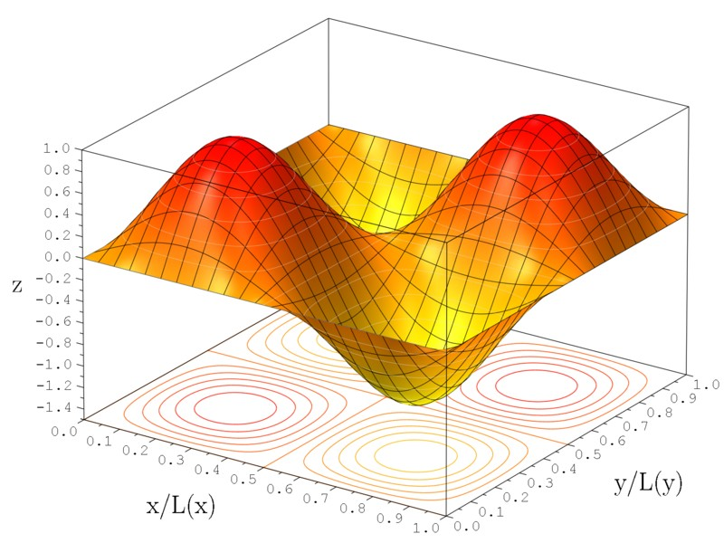

¿Qué es la Mecánica Cuántica?
La mecánica cuántica es la rama de la física que estudia la naturaleza a escalas espaciales pequeñas, los sistemas atómicos, subatómicos, sus interacciones con la radiación electromag nética y otras fuerzas, en términos de cantidades observables. Se basa en la observación de que todas las formas de energía se liberan en unidades discretas o paquetes llamados cuantos. Las partículas con esta propiedad pueden pertenecer a dos tipos distintos: fermiones o bosones. Algunos de estos últimos estan ligados a una interacción fundamental.

(Ej: el fotón pertenece a la electromagnética). Sorprendentemente, la teoría cuántica solo permite normalmente cálculos probabilísticos o estadísticos de las características observadas de las partículas elementales, entendidos en términos de funciones de onda. La ecuación de Sc hrödinger desempeña, en la mecánica cuántica, el papel que las leyes de Newton y la conser vación de la energía desempeñan en la mecánica clásica. Es decir, la predicción del comport amiento futuro de un sistema dinámico y es una ecuación de onda en términos de una función de onda la que predice analíticamente la probabilidad precisa de los eventos o resultados.
Colaboradores
La historia de la mecánica cuántica entrelazada con la historia de la química cuántica comienza escencialmente con el descubrimiento de los rayos catódicos en 1838 realizado por Michael Faraday, la introducción del término cuerpo negro por Gustav Kirchhoff en el invierno de 1859-1860, la sugerencia hecha por Ludwig Boltzmann en 1877 sobre que los estados de energía de un sistema físico deberían ser discretos, y la hipótesis cuántica de Max Planck en el 1900, quien decía que cualquier sistema de radiación de energía atómica podía teóricamente ser dividido en un número de elementos de energía discretos tal que cada uno de estos elementos de energía sea proporcional a la frecuencia con las que cada uno podía de manera individual irradiar energía.
Albert Eisntein

Albert Einstein (alemán: /ˈalbɛɐ̯t ˈʔaɪnʃtaɪn/;
Ulm, Imperio alemán; 14 de marzo de 1879-Princeton,
Estados Unidos; 18 de abril de 1955) fue un físico
alemán de origen judío, nacionalizado después suizo,
austriaco y estadounidense. Se le considera el científico
más importante, conocido y popular del siglo xx.12
En 1905, cuando era un joven físico desconocido, empleado
en la Oficina de Patentes de Berna, publicó su teoría de
la relatividad especial. En ella incorporó, en un marco
teórico simple fundamentado en postulados físicos sencillos,
conceptos y fenómenos estudiados antes por Henri Poincaré y
Hendrik Lorentz.
Como una consecuencia lógica de esta teoría,
dedujo la ecuación de la física más conocida a nivel popular:
la equivalencia masa-energía, E=mc². Ese año, publicó otros
trabajos que sentarían algunas de las bases de la física estadística
y de la mecánica cuántica.
En 1915, presentó la teoría de la relatividad general, en la que
reformuló por completo el concepto de la gravedad.3 Una de las
consecuencias fue el surgimiento del estudio científico del origen
y la evolución del universo por la rama de la física denominada
cosmología. En 1919, cuando las observaciones británicas de un eclipse
solar confirmaron sus predicciones acerca de la curvatura de la luz,
fue idolatrado por la prensa.4 Einstein se convirtió en un icono popular
de la ciencia mundialmente famoso, un privilegio al alcance de muy pocos
científicos.5
Erwin Schrödinger

(Viena, 1887 - id., 1961) Físico austriaco que compartió el
Premio Nobel de Física del año 1933 con Paul Dirac por su
contribución al desarrollo de la mecánica cuántica. Ingresó
en 1906 en la Universidad de Viena, en cuyo claustro permaneció,
con breves interrupciones, hasta 1920. Sirvió a su patria durante
la Primera Guerra Mundial, y luego, en 1921, se trasladó a Zurich,
donde residió los seis años siguientes.
En 1926 publicó una serie de artículos que sentaron las bases de
la moderna mecánica cuántica ondulatoria, y en los cuales transcribió
en derivadas parciales su célebre ecuación diferencial, que relaciona
la energía asociada a una partícula microscópica con la función de
onda descrita por dicha partícula. Dedujo este resultado tras adoptar
la hipótesis de Louis de Broglie, enunciada en 1924, según la cual la
materia y las partículas microscópicas, éstas en especial, son de
naturaleza dual y se comportan a la vez como onda y como cuerpo.
Niels Bohr

(Niels Henrik David Bohr; Copenhague, 1885 - 1962) Físico danés.
Considerado como una de las figuras más deslumbrantes de la física
contemporánea y, por sus aportaciones teóricas y sus trabajos prácticos,
como uno de los padres de la bomba atómica, fue galardonado en 1922 con
el Premio Nobel de Física "por su investigación acerca de la estructura
de los átomos y la radiación que emana de ellos".
Pese a contravenir principios de la física clásica, su modelo atómico,
que incorporaba el modelo de átomo planetario de Rutherford y la noción de
cuanto de acción introducida por Planck, permitió explicar tanto la estabilidad
del átomo como sus propiedades de emisión y de absorción de radiación. En esta
teoría, el electrón puede ocupar algunas órbitas estacionarias en las cuales no
irradia energía, y los procesos de emisión y de absorción son concebidos como
transiciones del electrón de una órbita estacionaria a otra.
Paul Dirac

(Bristol, Reino Unido, 1902 - Tallahassee, Estados Unidos, 1984)
Físico británico. Hijo de un profesor de francés de origen suizo,
Paul Dirac estudió en la escuela en que impartía clases su padre,
donde pronto mostró particular facilidad para las matemáticas. Cursó
estudios de ingeniería eléctrica en la Universidad de Bristol,
interesándose especialmente por el asiduo empleo de aproximaciones
matemáticas de que hace uso la ingeniería para la resolución de
todo tipo de problemas.
Sus razonamientos posteriores se basaron en
el aserto de que una teoría que intente explicar
leyes fundamentales del comportamiento de la
naturaleza puede construirse sólidamente sobre
la base de aproximaciones sugeridas por la intuición,
sin llegar a tener la certeza de cuáles son en realidad
los hechos acontecidos, dado que éstos pueden llegar a
ser de una complejidad tal que difícilmente pueden llegar
a ser descritos con exactitud, por lo cual el físico
deberá contentarse con un conocimiento tan sólo aproximado
de la realidad.
Werner Heisenberg

Hijo de un profesor de humanidades especializado
en la historia de Bizancio, se formó en la Universidad
de Munich, donde asistió a las clases de Arnold Sommerfeld
y por la que se doctoró en el año 1923. También colaboró
con Max Born en la Universidad de Gotinga.
Durante su formación fue compañero de Wolfgang Pauli
tanto en Munich como en Gotinga. Más adelante trabajó
con Niels Bohr en Copenhague (1924-1927) y desempeñó,
sucesivamente, los cargos de profesor de la Universidad
de Leipzig (1927), director del Instituto Káiser Wilhelm
de Berlín (1942) y del Max Planck de Gotinga (1946),
así como del de Munich (1958).
Werner Heisenberg desarrolló entre 1925 y 1926 una de
las formulaciones básicas de la mecánica cuántica, teoría
que habría de convertirse en una de las principales revoluciones
científicas del siglo XX. En 1927 enunció el llamado principio
de incertidumbre o de indeterminación, que afirma que no es
posible conocer, con una precisión arbitraria y cuando la masa
es constante, la posición y el momento de una partícula. De
ello se deriva que el producto de las incertidumbres de ambas
magnitudes debe ser siempre mayor que la constante de Planck.
El principio de incertidumbre expuesto por Heisenberg tiene
diversas formulaciones equivalentes, una de las cuales relaciona
dos magnitudes fundamentales como son la energía y el tiempo.
Experimentos
Doble rendija
El experimento de la doble rendija es un experimento realizado a principios del siglo XIX por el físico inglés Thomas Young, con el objetivo de apoyar la teoría de que la luz era una onda y rechazar la teoría de que la luz estaba formada por partículas. Young hizo pasar un haz de luz por dos rendijas y vio que sobre una pantalla se producía un patrón de interferencias, una serie de franjas brillantes y oscuras alternadas. Este resultado es inexplicable si la luz estuviera formada por partículas porque deberían observarse sólo dos franjas de luz frente a las rendijas, pero es fácilmente interpretable asumiendo que la luz es una onda y que sufre interferencias. Posteriormente este experimento se ha considerado en la física cuántica para demostrar el comportamiento ondulatorio de las partículas muy pequeñas, en la escala de los átomos. El experimento puede realizarse con electrones, átomos o neutrones produciendo patrones de interferencia similares a los obtenidos cuando se realiza con luz. Esto muestra, por tanto, este comportamiento ondulatorio de las partículas.

En 1961, Claus Jönsson aceleró un haz de electrones
a través de 50.000 voltios e hizo pasar este haz por
una doble rendija con una separación y anchura muy pequeñas.
Primero se hizo pasar el haz de electrones por una sola
rendija y se contaron a una cierta distancia con unos detectores.
Los detectores que estaban delante de la rendija contaban muchos
más electrones.
Seguidamente se hizo otra rendija, con lo que se vio que aparecían
unos máximos y unos mínimos de cuentas de electrones según la
posición de los detectores.
Es decir, había detectores a la altura de la primera rendija que
recibían menos electrones cuando había dos rendijas que cuando
había una.
La verdadera razón por la que nada puede ser más rápido que la luz
Lo primero que pensaron es que era por la carga que tenían los electrones.
Al tener carga negativa, estos electrones se podrían repeler mientras
viajaban juntos en el haz.

Para comprobarlo lanzaron electrones uno a uno con las dos rendijas abiertas y se obtuvo el mismo resultado, por lo que llegaron a la conclusión de que esos máximos y mínimos indicaban que los electrones habían sufrido una interferencia y, por tanto, tenían propiedades de ondas. El patrón de interferencias de la doble rendija fotografiado por Jönsson tenía semejanza con los patrones de doble rendija obtenidos con fuentes de luz, lo que reafirma la evidencia en favor de la naturaleza ondulatoria de las partículas. Al mismo tiempo se hicieron otros experimentos con partículas que llegaron a la misma conclusión: estas tenían propiedades de ondas. Esto no era explicable desde el punto de vista de la física clásica, por lo que formaría parte de una gran rama de física moderna, la física cuántica.
Computación cuántica
El término “computación cuántica”
sigue siendo complejo, poco común
y difícil de comprender. Pero aunque
sigue siendo muy poco probable que
tengamos computadoras cuánticas en
nuestros escritorios en un futuro
cercano, esta tecnología puede ayudar
a resolver problemas muy complejos.

La computación cuántica es un término
derivado de la física cuántica, la ciencia
que explica que las partículas pueden operar
en dos estados simultáneamente.
De acuerdo con la plataforma de
análisis CB Insights , se trata
de tecnología que puede abordar
problemas con numerosos factores
y posibles resultados mucho más
rápido que una computadora normal.
Es decir, estas computadoras pueden
procesar una cantidad abrumadora
de variables y resultados potenciales
más rápidamente que las computadoras
tradicionales.

Pero Manuel López, doctor en ciencias de
la computación, explicó que hoy en día
la computación cuántica sigue en una
fase muy experimental por dos razones:
la primera, porque se necesita un
lenguaje de programación que use el
paradigma de la computación cuántica
y, aunque cada vez es menos complejo
, pocas personas lo conocen.
La segunda, porque crear computadoras de
este tipo requiere de mucho tiempo y dinero,
por lo que solamente empresas como IBM,
Google o Microsoft están invirtiendo en
estas tecnologías.
Pero este tipo de computación es muy útil
porque permite resolver problemas del mundo
real, muy complejos, en muy poco tiempo.
 López explicó que las computadoras tradicionales
funcionan secuencialmente. Es decir, que no pueden
hacer todas las operaciones al mismo tiempo.
Un ejemplo más tangible es con un documento de Excel.
Para poder resolver varias ecuaciones distintas,
tendrías que ir resolviendo una por una, pero con
la computación cuántica es como si te pudiera resolver
todas al mismo tiempo y más rápido porque puedes abarcar
todas las posibilidades que tiene un problema.
López explicó que las computadoras tradicionales
funcionan secuencialmente. Es decir, que no pueden
hacer todas las operaciones al mismo tiempo.
Un ejemplo más tangible es con un documento de Excel.
Para poder resolver varias ecuaciones distintas,
tendrías que ir resolviendo una por una, pero con
la computación cuántica es como si te pudiera resolver
todas al mismo tiempo y más rápido porque puedes abarcar
todas las posibilidades que tiene un problema.